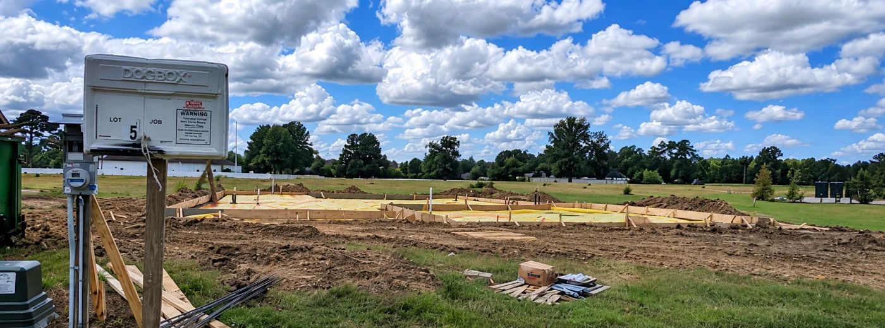
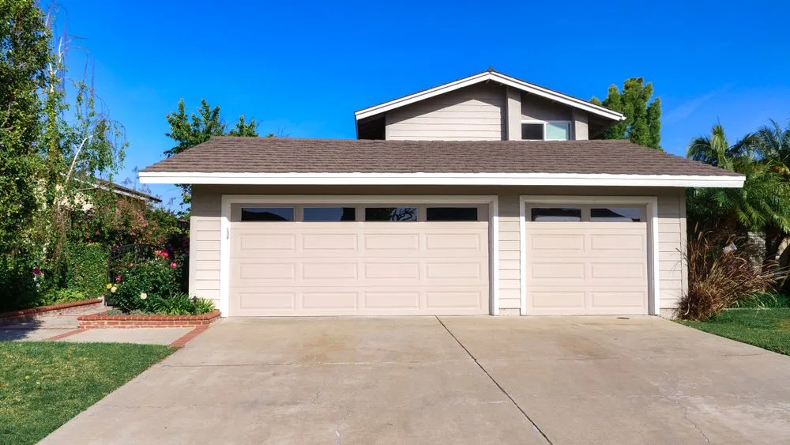

Pre-Slab
Pre-slab inspections evaluate accessible plumbing within the footings and slab, slab grading, and the vapor barrier (encapsulation) before concrete is poured.
Plan inspections around your builder's timeline: pre-slab, pre-drywall, final, and 11-month warranty. Add testing and specialty services that fit your new home.
Schedule your inspectionSome of the most important details are covered up long before closing. We help you check in at the stages that matter.

Pre-slab inspections evaluate accessible plumbing within the footings and slab, slab grading, and the vapor barrier (encapsulation) before concrete is poured.
Pre-drywall inspections evaluate visible framing and the home’s plumbing, electrical, and HVAC rough-ins before walls are closed. This stage allows accessible installation details and potential concerns to be identified while these systems remain visible.

With construction complete, the final inspection evaluates the home’s operation, function, and visible condition—from roof to foundation and the accessible systems and components in between. Findings help you discuss concerns with your builder before closing.

Approaching your first anniversary? Document concerns before your builder's one-year warranty period ends.
Thermal imaging is included with every home inspection. Gas detection is included for homes with gas utilities. Both are provided at no additional cost.
Thermal imaging adds a temperature-based view of accessible areas to the inspection, helping identify temperature differences that may warrant further evaluation.

Purchasing a home with gas utilities? Gas detection is provided as part of your home inspection, helping us evaluate accessible gas connections.
Yes—a Certificate of Occupancy and a home inspection serve different purposes.
The local municipality inspects permitted work for applicable building code requirements. A Certificate of Occupancy (CO) authorizes occupancy after the jurisdiction’s required approvals. These inspections focus on code compliance at specified construction stages; they are not a buyer’s detailed home-condition report.
We examine accessible systems and components, operate equipment within the inspection scope, and document visible concerns—from plumbing leaks and electrical issues to roofing and HVAC concerns. You receive findings you can discuss with your builder before closing.
Municipal inspections review permitted work for applicable code requirements at required stages. An independent home inspection gives you a separate assessment of accessible systems and components, with documented findings to discuss with your builder.
A CO authorizes occupancy after the jurisdiction’s required approvals. It is not a guarantee that every component is defect-free. An independent inspection can identify visible concerns that still need attention.
A warranty sets terms for covered repairs; it does not identify problems for you. Inspections before closing and near the end of the first year can help you document concerns and bring them to your builder within the applicable deadlines.
A home inspection complements the local inspection process; it does not replace code approvals or uncover every concealed defect. Local procedures vary.
Choose additional services based on the home’s systems, your concerns, and any lender requirements. We can help plan their scope and timing around construction readiness.

A sewer scope uses a specialized camera to examine the inside of the main wastewater line toward the public sewer connection or septic tank. New lines can contain debris, damage, or installation issues. Schedule it when the line is complete and safely accessible. See illustrated examples and scheduling guidance.

An indoor air quality inspection evaluates conditions that may affect the air inside a home, including moisture, ventilation problems, and selected airborne contaminants. The exact assessment or sampling scope should fit your concern.

Well water testing checks a sample of private well water for specific bacteria, chemicals, or water-quality indicators. If your lender requests testing, confirm the required panel and arrange collection once the system is ready. Samples should be analyzed by a state-certified drinking water laboratory.

A pool inspection reviews visible conditions and accessible equipment; an irrigation inspection checks visible sprinkler components and operation. Ask about these additional services when the systems are complete and operational.

A manufactured home foundation certification is a separate engineering service that documents whether the foundation meets applicable permanent-foundation requirements. Ask your lender whether it is needed for your new home. Explore foundation certifications.

A septic inspection evaluates the condition and operation of a private wastewater system. We coordinate this separate service through Coastal Septic when the new system is ready and accessible. Confirm any lender documentation requirements.
Our inspection team is ready to help you plan the services your property and lender require—from well water testing and manufactured home certifications to septic coordination through Coastal Septic.
Explore inspection services for your loan